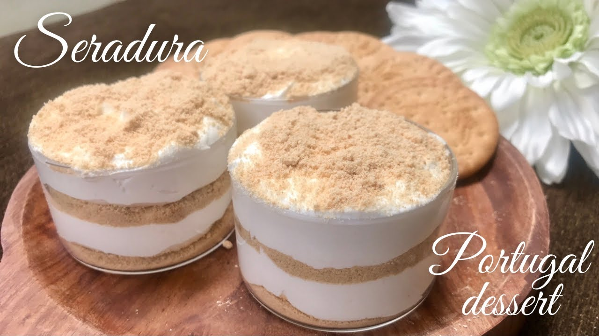

Seradura recipe

Description
Seradura, also known as Macau-style pudding or Serradura, is a popular, no-bake dessert originating from Macau, a special region of China known for its blend of Portuguese and Chinese influences. The name "Seradura" comes from the Portuguese word *seradura*, meaning "sawdust," which refers to the appearance of the crushed biscuit layers in the dessert.
This indulgent treat features alternating layers of crushed Marie biscuits (or digestive biscuits) and a smooth, sweet cream filling made from whipped heavy cream and sweetened condensed milk. The result is a dessert that's wonderfully creamy, with the biscuits providing a crunchy contrast that adds texture and richness. Often chilled for several hours or overnight, Seradura becomes more cohesive and sets into a dense, velvety consistency, making it perfect for serving in individual cups or as a large layered dessert.
The simplicity of the ingredients—mostly pantry staples—belies the indulgence and deliciousness of the dessert. Seradura is often enjoyed as a light yet satisfying ending to a meal and is loved for its ease of preparation, making it a favorite in many households, especially for casual gatherings or festive occasions.
Ingredients
- Marie biscuits (or digestive biscuits) – around 200g, crushed
- Sweetened condensed milk – 1 can (approximately 397g)
- Heavy whipping cream – 250ml
- Powdered sugar – 2-3 tablespoons (optional, depending on your sweetness preference)
- Vanilla extract – 1 teaspoon (optional, for added flavor)
steps
- Crush the biscuits: Place the biscuits in a food processor or put them in a plastic bag and crush them into fine crumbs.
- Whip the cream: In a separate bowl, whip the heavy cream until soft peaks form. If you like a sweeter flavor, you can add powdered sugar during this process.
- Mix condensed milk: In another bowl, mix the sweetened condensed milk and vanilla extract (if using) together.
- Layering: In a glass dish or individual serving cups, start with a layer of crushed biscuits, followed by a layer of the whipped cream mixture. Repeat until you have used up all the ingredients, ending with a layer of whipped cream on top.
- Chill: Refrigerate the dessert for at least 4-6 hours (overnight is best) to let the flavors meld and the texture firm up.
- Serve: Before serving, you can optionally sprinkle some more crushed biscuits or chocolate shavings on top for extra texture and flavor.